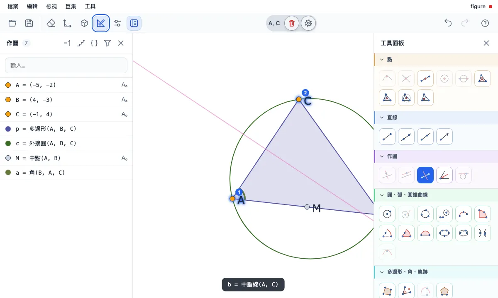

工具面板

開啟工具面板
- 操作列中的，或「檢視 › 工具面板」，會在右側平鋪顯示全部工具，依工具族分組，顏色與工具環相同，最後是圖形中的巨集。
- 首次啟動時工具面板可見。之後，此瀏覽器會記住面板的開啟或關閉狀態，並在下次啟動時還原。
- 它佔據屬性面板的位置：開啟其中一個會關閉另一個，手中的工具不會被放下。
- 點按工具族標題可將其收合或展開，DocGeo 會記住。
- Esc 放下工具或清除選取，然後關閉工具面板。
- 在小螢幕上，工具面板會覆蓋圖形，選擇工具後立即關閉。寬度小於 500 px 時，其按鈕從操作列移到輸入列右側。
用工具作圖
- 點按工具即可拿起；工具處於按下狀態時，再次點按會放下它。
- 工具面板包含工具環的全部工具以及更多工具（下文標有工具環）。「平面」和「立體圖形」工具族以及標有3D的工具只在 3D 檢視中出現。
- 程式類不在工具環中，用於建立海龜、按鈕和事件程式（見積木與海龜）。
- 工具面板開啟時，點按物件會選取它而不開啟工具環，點按空白處則取消選取。不接受該物件或多選的工具會變灰。
- 工具面板開啟且未選工具時，圖形只能被操作：點按空白處或交叉處不會建立點。要建立點，請選擇工具面板中的第一個工具點。
- 指標停在工具上時，提示中顯示它的那一列。若所選物件已足夠，它將建立的物件會以淺色顯示。
- 第一個選取的物件可以佔據其類型允許的任何位置：作垂線時，直線可以先於點選取。
- 也可以在「作圖」面板中選取參數：工具接受的物件所在的列以綠色標示，其他列變淡。隱藏的物件也可以在這裡選取。在這裡只能選取已有的點，兩個物件給出它們的全部交點。工具使用中時，點按某一列不會修改它。已選取的列變為藍色，並顯示它在命令中的位置（1、2…）。
- 工具是持續的：每完成一個物件，它都會重新等待第一個參數。它的按鈕保持按下，工具列顯示一條帶有完成的橫幅。
- 按住 Shift 選取的參數會被保留：每完成一個物件，工具都會再次採用它，直到離開工具。按住 Shift 點選對稱軸，再逐一點選要變換的物件；同心圓的圓心也是如此。提示列中的保留 d按鈕作用相同（例如用手指時）；更換 d會重新要求選取它。工具環中的工具以及在選工具之前已選取的物件不適用。
- 離開：完成、Esc、提示中的✕、再次點按該工具、橡皮擦、逐步構造，或在輸入列中點按。復原、重做、屬性和 3D 檢視會保留目前的工具。
先選取物件
先選取的物件成為所選工具的參數：見用多選作圖。
變換物件
- 變換先選取確定它的物件（中心、對稱軸、向量、圓），再選取要變換的點或物件：線段、直線、射線、向量、多邊形、圓、圓弧、圓錐曲線、函數圖形、軌跡；在 3D 中還可以是平面、球、多面體（反演除外）。
- 指標下優先選點，其次是物件；在空白處則建立一個點。懸停時，像以淺色顯示。
- 像與物件屬於同一類：多邊形的像是多邊形，圓的像是圓……函數圖形、軌跡或圓錐曲線的弧的像是軌跡。
- 在反演下，直線或圓的像是圓，若通過反演中心則是直線；多邊形的像是邊為曲線的多邊形。
- 像沿用其物件的顏色、填色、大小、不透明度和虛線。像不能拖曳，但可以在上面放置點。
- 要變換多個物件，按住 Shift 選取中心或對稱軸（保留的參數）。
全部工具
每個工具：需要選取什麼，以及寫出的列。
點
-
點點按的位置：空白處為自由點，在物件上為物件上的點，在兩個物件交叉處為交點。
A = (x, y) -
物件上的點工具環一個物件：在點按處建立該物件上的點。點按空白處不起作用。
點(c, t) -
交點工具環點按一次交叉處：得到該點；或依次選取兩個物件：得到它們的全部交點，與 GeoGebra 相同（直線與圓有兩個交點，即使它們暫時不相交）。
交點(a, b) -
中點工具環兩個點，或一條線段。
中點(A, B) -
圓心工具環一個圓：它的圓心。
圓心(c) -
另一交點兩個物件，再選已位於其中一個交點上的點：離它最遠的交點。
另一交點(a, b, P) -
內心三個點，三角形的頂點：其內切圓的圓心。
內心(A, B, C) -
重心三個點：三角形的重心。
重心(A, B, C) -
外心三個點：外接圓的圓心。
外心(A, B, C) -
垂心三個點：三角形的垂心。
垂心(A, B, C)
直線
-
線段工具環兩個點，即端點。
線段(A, B) -
直線工具環直線上的兩個點。
直線(A, B) -
射線工具環兩個點：端點，然後射線上的一點。
射線(A, B) -
向量工具環兩個點：起點，然後終點。
向量(A, B)
作圖
-
垂線工具環一個點和一條直線，順序任意。3D 中為一條直線或一個平面。
垂線(P, d) -
平行線工具環一個點和一條直線，順序任意。
平行線(P, d) -
中垂線工具環兩個點，或一條線段。
中垂線(A, B) -
角平分線工具環三個點：第一條邊上的一點、頂點、第二條邊上的一點。
角平分線(A, O, B) -
切線一個點，然後一個圓、一條圓錐曲線或函數圖形。工具給出第 1 條切線；在該列中把這個編號改為 2 可得另一條。
切線(P, c, 1)
圓、弧、圓錐曲線
-
圓（圓心和點）工具環圓心，然後圓上的一點。
圓(O, A) -
圓（圓心和半徑）工具環只需圓心：在工具環中按住圖示，移動滑鼠或手指，放開時確定半徑。從選單或工具面板建立時，初始半徑約為150像素。之後可拖曳圓或編輯其指令列來改變半徑。
-
外接圓工具環圓上的三個點。
外接圓(A, B, C) -
圓規兩個給出半徑的點，然後圓心。
圓規(A, B, O) -
圓（圓心、方向和半徑）3D圓心，然後一條直線（軸）或一個平面（與圓平行），包括地面。半徑約 150 像素。
圓(O, 3.8, d) -
圓（軸和點）3D一條直線（軸），然後圓上的一點。
圓(d, P) -
圓弧三個點：起點、經過的點、終點（3D 中位於它們所在的平面內）。或一個圓或橢圓，然後起點和終點（逆時針）。
圓弧(A, B, C),圓弧(c, P, Q) -
扇形同圓弧，三個點，或一個圓或橢圓和兩個點：它所圍成的扇形。
扇形(A, B, C),扇形(c, P, Q) -
圓心弧圓心、起點，然後圓弧終止處射線上的一點（逆時針）。3D 中，為角 AMB 所對的弧，位於其平面內。
圓心弧(M, A, B) -
圓心扇形同
圓心弧：扇形。圓心扇形(M, A, B) -
半圓兩個點，直徑的端點：位於 [AB] 左側的半圓。
半圓(A, B) -
二次曲線圓錐曲線上的五個點。從第二個點起，預覽顯示最接近圓的圓錐曲線。
二次曲線(A, B, C, D, E) -
橢圓兩個焦點，然後橢圓上的一點。
橢圓(F, G, P) -
雙曲線兩個焦點，然後雙曲線上的一點。
雙曲線(F, G, P) -
拋物線焦點，然後準線。
拋物線(F, d)
多邊形、角、軌跡
-
多邊形工具環逐個選取頂點，最後再選第一個頂點以閉合。
多邊形(A, B, C) -
角工具環三個點：第一條邊上的一點、頂點、第二條邊上的一點。
角(A, O, B) -
軌跡工具環一個依賴於物件上的點的點：當該點在其物件上移動時它的軌跡。
軌跡(M, P) -
正多邊形兩個相鄰頂點：工具給出正方形；在其列中修改邊數。
正多邊形(A, B, 4)
變換
-
中心對稱工具環中心，然後要變換的點或物件。
對稱(O, P) -
軸對稱工具環對稱軸，然後要變換的點或物件。
對稱(d, P) -
旋轉中心，然後點或物件：旋轉四分之一圈，可在其列中修改。
旋轉(O, P, 90) -
平移向量，然後點或物件。
平移(u, P) -
位似中心，然後點或物件：比為 2，可在其列中修改。
位似(O, P, 2) -
反演反演圓，然後點或物件。
反演(c, P)
平面
-
平面3D三個點，或一個點和一條直線。
平面(A, B, C) -
平行平面3D一個點和一個平面（包括地面）：過該點的平行平面。
平行平面(A, p) -
垂直平面3D一個點和一條直線：垂直於該直線的平面。
垂直平面(A, d)
立體圖形
-
球工具環3D球心，然後球面上的一點。在點的工具環中，此工具位於圓工具旁。
球(O, A) -
圓柱3D兩個點，軸的兩端。半徑約 150 像素。
圓柱(A, B, 3.8) -
圓錐3D底面圓心，然後頂點。半徑約 150 像素。
圓錐(A, B, 3.8) -
立方體3D同一平面上或同一高度的兩個點，否則為三個點（見 3D）。
立方體(A, B, C) -
稜柱3D一個多邊形（底面），然後一個點，即對面一個面的頂點。
稜柱(p, P) -
稜錐3D一個多邊形（底面），然後頂點。
稜錐(p, S) -
截面3D一個立體圖形（球、圓柱、圓錐、多面體）和一個平面，順序任意。
截面(s, p) -
展開圖3D立方體、稜柱或稜錐：它的平面展開圖。
展開圖(c, 1)
程式
-
新程式在屬性中開啟一個空白程式。
-
海龜一個點，或在空白處新建一個點：從該點出發的海龜，以積木開啟。
TURTLE_INIT("A", A) -
按鈕其箭頭的位置：按鈕，其程式以積木開啟。
按鈕("執行") -
當物件被拖曳一個可拖曳的點：拖曳它時執行的程式，以積木開啟。
-
當物件被按下一個可拖曳的點：按下它時執行的程式，以積木開啟。
-
當物件被放開一個可拖曳的點：放開它時執行的程式，以積木開啟。
-
當值改變一個運算式：其值改變時執行的程式，以積木開啟。
巨集
-
新增巨集所選物件作為前幾個初始物件：定義一個巨集；圖形中的巨集排在其後（見巨集）。
變換作出點或物件的像（見變換物件）。只能用鍵盤輸入的：定點、頂點、滑桿、列表、空間中的交點、橢圓(F, G, a)和 雙曲線(F, G, a)（見指令）。